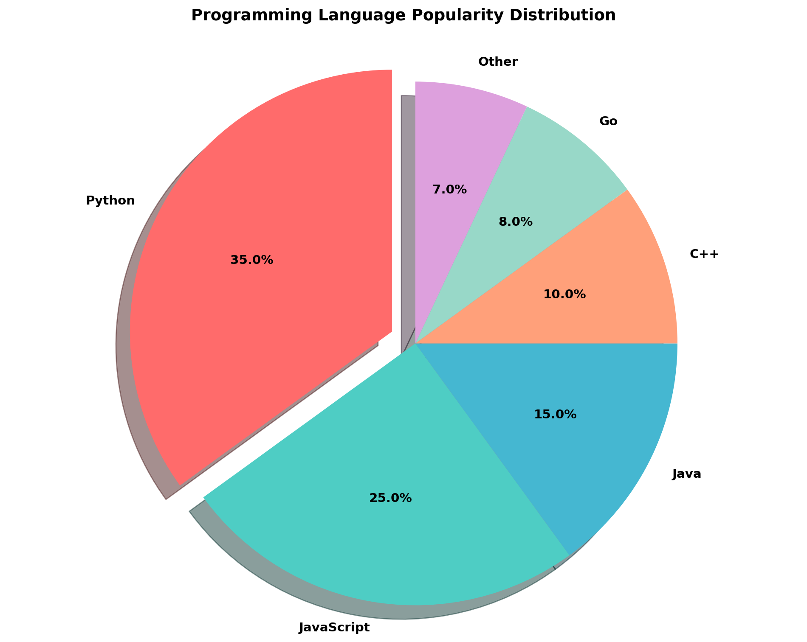

import matplotlib.pyplot as plt
import numpy as np
# Generate sample data
x = np.linspace(0, 10, 100)
y1 = np.sin(x)
y2 = np.cos(x)
# Create the plot
plt.figure(figsize=(10, 6))
plt.plot(x, y1, label='sin(x)', linewidth=2)
plt.plot(x, y2, label='cos(x)', linewidth=2)
plt.xlabel('x', fontsize=12)
plt.ylabel('y', fontsize=12)
plt.title('Sine and Cosine Functions', fontsize=14, fontweight='bold')
plt.legend()
plt.grid(True, alpha=0.3)
plt.tight_layout()
plt.show()Matplotlib Examples
Introduction
This document demonstrates various matplotlib visualizations using Python.
What is Matplotlib?
Matplotlib is a comprehensive Python library for creating static, animated, and interactive visualizations. It was created by John Hunter in 2003 and has become one of the most popular plotting libraries in the Python ecosystem.
Key Features
- Versatile Plotting: Supports a wide variety of plot types including line plots, scatter plots, bar charts, histograms, pie charts, 3D plots, and more
- Publication Quality: Produces high-quality figures suitable for academic papers, presentations, and publications
- Customizable: Offers extensive customization options for colors, labels, legends, axes, and styling
- Integration: Works seamlessly with NumPy, Pandas, and other scientific Python libraries
- Multiple Backends: Can render plots to various file formats (PNG, PDF, SVG, EPS) and display them in different environments (Jupyter notebooks, Python scripts, web applications)
Why is Matplotlib Useful?
- Data Visualization: Essential for exploring and understanding data through visual representations
- Communication: Helps communicate findings and insights effectively to both technical and non-technical audiences
- Analysis: Enables quick visual inspection of data patterns, trends, and anomalies
- Research: Widely used in scientific research, data science, and machine learning for result visualization
- Flexibility: Provides fine-grained control over every aspect of a plot, allowing for precise customization
- Industry Standard: One of the most established and well-documented visualization libraries in Python
Whether you’re analyzing sales trends, visualizing experimental results, or creating publication-ready figures, matplotlib provides the tools you need to create compelling and informative visualizations.
Line Plot
Scatter Plot
import matplotlib.pyplot as plt
import numpy as np
# Generate random data
np.random.seed(42)
x = np.random.randn(100)
y = np.random.randn(100)
colors = np.random.rand(100)
sizes = 1000 * np.random.rand(100)
# Create scatter plot
plt.figure(figsize=(10, 6))
plt.scatter(x, y, c=colors, s=sizes, alpha=0.6, cmap='viridis')
plt.xlabel('X values', fontsize=12)
plt.ylabel('Y values', fontsize=12)
plt.title('Scatter Plot with Color and Size Variation', fontsize=14, fontweight='bold')
plt.colorbar(label='Color intensity')
plt.tight_layout()
plt.show()Simple Scatter Plot with Random Data
import matplotlib.pyplot as plt
import numpy as np
# Generate random data points
np.random.seed(123)
x = np.random.rand(50) * 100
y = np.random.rand(50) * 100
# Create scatter plot
plt.figure(figsize=(10, 6))
plt.scatter(x, y, color='steelblue', s=100, alpha=0.7, edgecolors='black', linewidth=1.5)
plt.xlabel('X Axis (Random Values)', fontsize=12)
plt.ylabel('Y Axis (Random Values)', fontsize=12)
plt.title('Random Data Points Scatter Plot', fontsize=14, fontweight='bold')
plt.grid(True, alpha=0.3, linestyle='--')
plt.tight_layout()
plt.show()Bar Chart
import matplotlib.pyplot as plt
# Sample data
categories = ['A', 'B', 'C', 'D', 'E']
values = [23, 45, 56, 78, 32]
# Create bar chart
plt.figure(figsize=(10, 6))
bars = plt.bar(categories, values, color=['#FF6B6B', '#4ECDC4', '#45B7D1', '#FFA07A', '#98D8C8'])
plt.xlabel('Categories', fontsize=12)
plt.ylabel('Values', fontsize=12)
plt.title('Bar Chart Example', fontsize=14, fontweight='bold')
plt.ylim(0, 90)
# Add value labels on bars
for bar in bars:
height = bar.get_height()
plt.text(bar.get_x() + bar.get_width()/2., height,
f'{int(height)}',
ha='center', va='bottom', fontsize=11)
plt.tight_layout()
plt.show()
Pie Chart
import matplotlib.pyplot as plt
# Sample data
categories = ['Python', 'JavaScript', 'Java', 'C++', 'Go', 'Other']
sizes = [35, 25, 15, 10, 8, 7]
colors = ['#FF6B6B', '#4ECDC4', '#45B7D1', '#FFA07A', '#98D8C8', '#DDA0DD']
explode = (0.1, 0, 0, 0, 0, 0) # Explode the first slice (Python)
# Create pie chart
plt.figure(figsize=(10, 8))
plt.pie(sizes, explode=explode, labels=categories, colors=colors,
autopct='%1.1f%%', shadow=True, startangle=90,
textprops={'fontsize': 11, 'fontweight': 'bold'})
plt.title('Programming Language Popularity Distribution',
fontsize=14, fontweight='bold', pad=20)
plt.axis('equal') # Equal aspect ratio ensures that pie is drawn as a circle
plt.tight_layout()
plt.show()Histogram
import matplotlib.pyplot as plt
import numpy as np
# Generate random data
np.random.seed(42)
data = np.random.normal(100, 15, 1000)
# Create histogram
plt.figure(figsize=(10, 6))
plt.hist(data, bins=30, color='skyblue', edgecolor='black', alpha=0.7)
plt.xlabel('Value', fontsize=12)
plt.ylabel('Frequency', fontsize=12)
plt.title('Histogram of Normal Distribution', fontsize=14, fontweight='bold')
plt.axvline(data.mean(), color='red', linestyle='--', linewidth=2, label=f'Mean: {data.mean():.2f}')
plt.legend()
plt.tight_layout()
plt.show()Subplots
import matplotlib.pyplot as plt
import numpy as np
# Generate data
x = np.linspace(0, 10, 100)
y1 = np.sin(x)
y2 = np.cos(x)
y3 = np.tan(x)
y4 = np.exp(-x/5)
# Create subplots
fig, axes = plt.subplots(2, 2, figsize=(12, 10))
# Plot 1
axes[0, 0].plot(x, y1, 'b-', linewidth=2)
axes[0, 0].set_title('Sine Function', fontweight='bold')
axes[0, 0].set_xlabel('x')
axes[0, 0].set_ylabel('sin(x)')
axes[0, 0].grid(True, alpha=0.3)
# Plot 2
axes[0, 1].plot(x, y2, 'r-', linewidth=2)
axes[0, 1].set_title('Cosine Function', fontweight='bold')
axes[0, 1].set_xlabel('x')
axes[0, 1].set_ylabel('cos(x)')
axes[0, 1].grid(True, alpha=0.3)
# Plot 3
axes[1, 0].plot(x, y3, 'g-', linewidth=2)
axes[1, 0].set_title('Tangent Function', fontweight='bold')
axes[1, 0].set_xlabel('x')
axes[1, 0].set_ylabel('tan(x)')
axes[1, 0].set_ylim(-5, 5)
axes[1, 0].grid(True, alpha=0.3)
# Plot 4
axes[1, 1].plot(x, y4, 'm-', linewidth=2)
axes[1, 1].set_title('Exponential Decay', fontweight='bold')
axes[1, 1].set_xlabel('x')
axes[1, 1].set_ylabel('exp(-x/5)')
axes[1, 1].grid(True, alpha=0.3)
plt.tight_layout()
plt.show()
3D Plot
import matplotlib.pyplot as plt
from mpl_toolkits.mplot3d import Axes3D
import numpy as np
# Generate data
x = np.linspace(-5, 5, 50)
y = np.linspace(-5, 5, 50)
X, Y = np.meshgrid(x, y)
Z = np.sin(np.sqrt(X**2 + Y**2))
# Create 3D plot
fig = plt.figure(figsize=(12, 8))
ax = fig.add_subplot(111, projection='3d')
surf = ax.plot_surface(X, Y, Z, cmap='viridis', alpha=0.8)
ax.set_xlabel('X', fontsize=12)
ax.set_ylabel('Y', fontsize=12)
ax.set_zlabel('Z', fontsize=12)
ax.set_title('3D Surface Plot', fontsize=14, fontweight='bold')
fig.colorbar(surf, shrink=0.5, aspect=5)
plt.show()Conclusion
These examples showcase the versatility of matplotlib for creating various types of visualizations in Python.